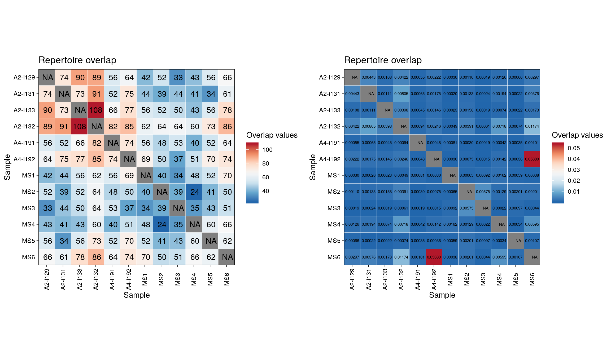
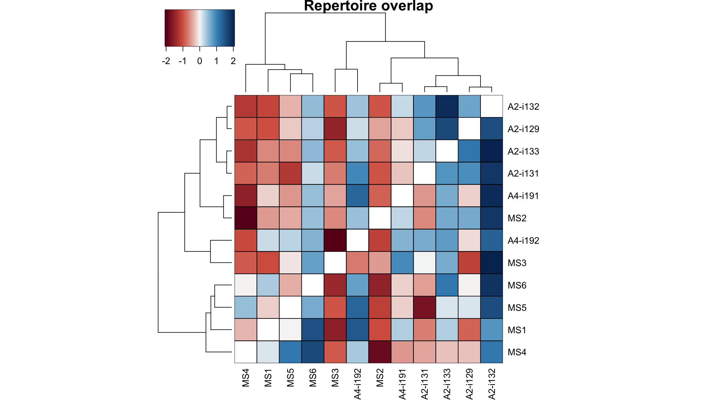
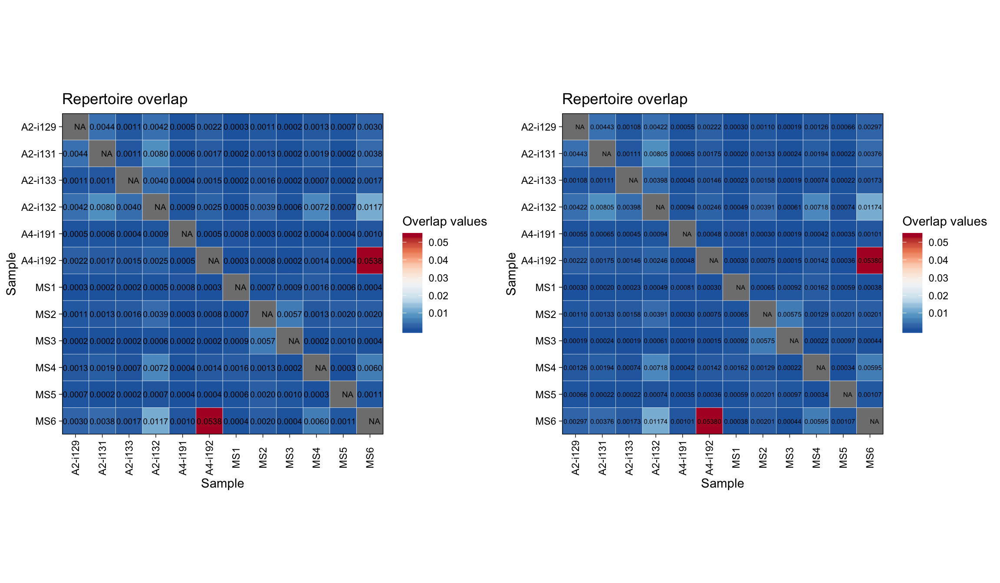
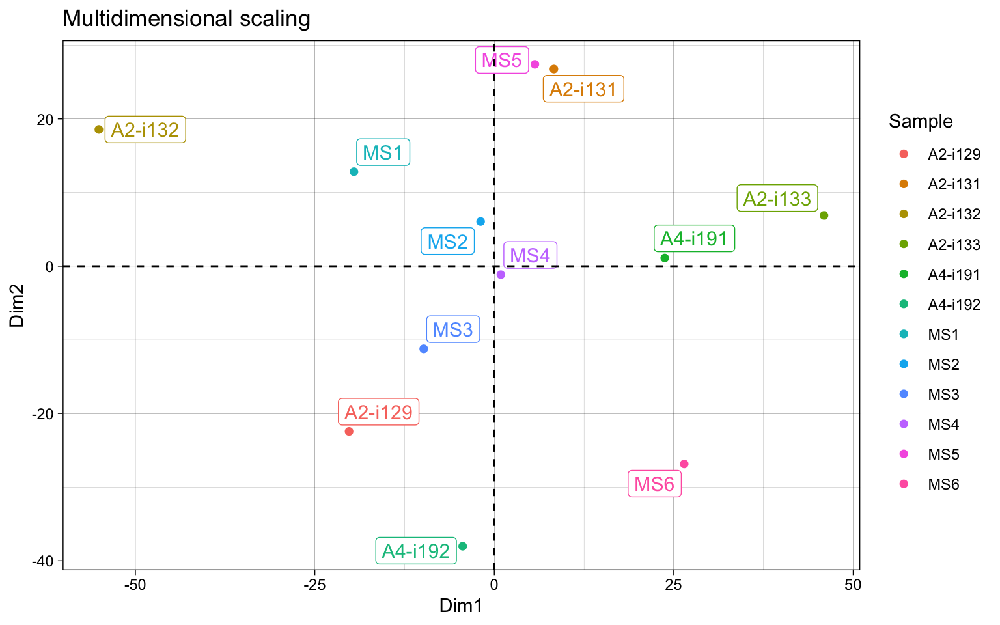
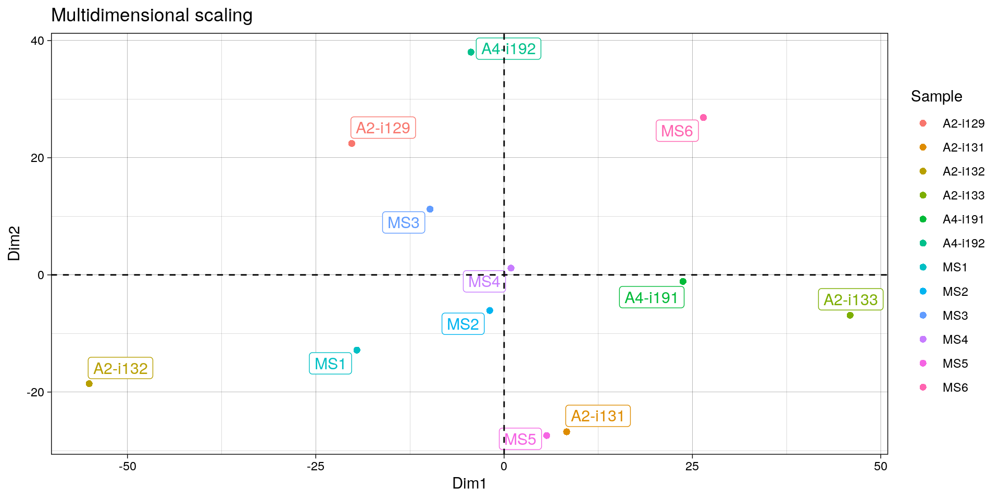
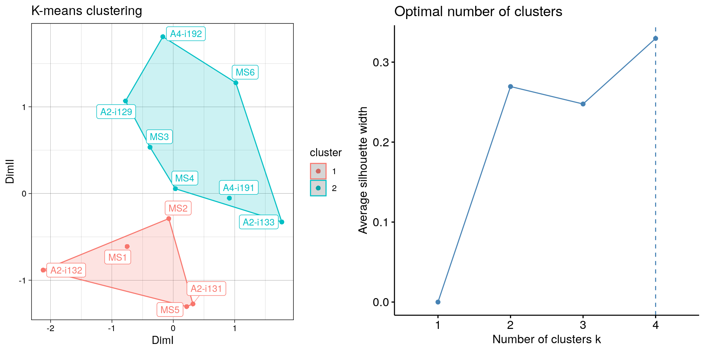

vignettes/v4_overlap.Rmd
v4_overlap.RmdRepertoire overlap is the most common approach to measure repertoire similarity. It is achieved by computation of specific statistics on clonotypes shared between given repertoires, also called “public” clonotypes. immunarch provides several indices: - number of public clonotypes (.method = "public") - a classic measure of overlap similarity.
overlap coefficient (.method = "overlap") - a normalised measure of overlap similarity. It is defined as the size of the intersection divided by the smaller of the size of the two sets.
Jaccard index (.method = "jaccard") - it measures similarity between finite sample sets, and is defined as the size of the intersection divided by the size of the union of the sample sets.
Tversky index (.method = "tversky") - an asymmetric similarity measure on sets that compares a variant to a prototype. If using default arguments, it’s similar to Dice’s coefficient.
cosine similarity (.method = "cosine") - a measure of similarity between two non-zero vectors
Morisita’s overlap index (.method = "morisita") - a statistical measure of dispersion of individuals in a population. It is used to compare overlap among samples.
incremental overlap - overlaps of the N most abundant clonotypes with incrementally growing N (.method = "inc+METHOD", e.g., "inc+public" or "inc+morisita").
The function that includes described methods is repOverlap. Again the output is easily visualised when passed to vis() function that does all the work:
imm_ov1 = repOverlap(immdata$data, .method = "public", .verbose = F)
imm_ov2 = repOverlap(immdata$data, .method = "morisita", .verbose = F)
grid.arrange(vis(imm_ov1), vis(imm_ov2, .text.size=2), ncol = 2)

You can easily change the number of significant digits:
grid.arrange(vis(imm_ov2, .text.size=2.5, .signif.digits=1), vis(imm_ov2, .text.size=2, .signif.digits=2), ncol = 2)
To analyse the computed overlap measures function apply repOverlapAnalysis.
# Apply different analysis algorithms to the matrix of public clonotypes:
# "mds" - Multi-dimensional Scaling
repOverlapAnalysis(imm_ov1, "mds")## Standard deviations (1, .., p=4):
## [1] 0 0 0 0
##
## Rotation (n x k) = (12 x 2):
## [,1] [,2]
## A2-i129 -20.2308709 -22.431389
## A2-i131 8.3055445 26.779321
## A2-i133 45.9341813 6.893304
## A2-i132 -55.0903957 18.572513
## A4-i191 23.7461189 1.118162
## A4-i192 -4.4041243 -38.028858
## MS1 -19.5494165 12.836320
## MS2 -1.9063188 6.075283
## MS3 -9.8321059 -11.217724
## MS4 0.9127103 -1.154627
## MS5 5.6552254 27.415676
## MS6 26.4594518 -26.857981## DimI DimII
## A2-i129 -153.91535 -104.41659
## A2-i131 140.95080 -270.66403
## A2-i133 44.50710 168.50598
## A2-i132 59.51789 167.86388
## A4-i191 40.56315 154.00845
## A4-i192 -146.60389 -91.99456
## MS1 -139.79805 -107.32500
## MS2 54.94460 154.22618
## MS3 -148.31662 -101.93082
## MS4 51.06219 159.53677
## MS5 136.36044 -274.12929
## MS6 60.72775 146.31903
## attr(,"class")
## [1] "matrix" "immunr_tsne"
# Apply different analysis algorithms to the matrix of public clonotypes:
# "mds" - Multi-dimensional Scaling
repOverlapAnalysis(imm_ov1, "mds")## Standard deviations (1, .., p=4):
## [1] 0 0 0 0
##
## Rotation (n x k) = (12 x 2):
## [,1] [,2]
## A2-i129 -20.2308709 -22.431389
## A2-i131 8.3055445 26.779321
## A2-i133 45.9341813 6.893304
## A2-i132 -55.0903957 18.572513
## A4-i191 23.7461189 1.118162
## A4-i192 -4.4041243 -38.028858
## MS1 -19.5494165 12.836320
## MS2 -1.9063188 6.075283
## MS3 -9.8321059 -11.217724
## MS4 0.9127103 -1.154627
## MS5 5.6552254 27.415676
## MS6 26.4594518 -26.857981## DimI DimII
## A2-i129 142.861670 137.04718
## A2-i131 -262.345193 -120.02250
## A2-i133 -11.111658 -64.71883
## A2-i132 1.601935 -48.22776
## A4-i191 1.827444 -61.54830
## A4-i192 133.443649 145.66898
## MS1 147.990243 148.73979
## MS2 -10.582184 -51.97990
## MS3 141.742517 142.34572
## MS4 -5.972286 -55.53380
## MS5 -261.994397 -125.09142
## MS6 -17.461737 -46.67918
## attr(,"class")
## [1] "matrix" "immunr_tsne"
# Clusterise the MDS resulting components using K-means
vis(repOverlapAnalysis(imm_ov1, "mds+kmeans"))
In order to build a massive table with all clonotypes from the list of repertoires use the pubRep function.
# Pass "nt" as the second parameter to build the public repertoire table using CDR3 nucleotide sequences
pr.nt = pubRep(immdata$data, "nt", .verbose = F)
pr.nt## Source: local data table [88,528 x 14]
##
## # A tibble: 88,528 x 14
## CDR3.nt Samples `A2-i129` `A2-i131` `A2-i133` `A2-i132` `A4-i191`
## <chr> <dbl> <dbl> <dbl> <dbl> <dbl> <dbl>
## 1 TGCGCC… 8 2 NA 2 1 NA
## 2 TGTGCC… 7 NA 1 1 2 1
## 3 TGTGCC… 7 1 1 1 NA 1
## 4 TGCGCC… 6 2 NA 1 1 NA
## 5 TGTGCC… 6 5 3 NA 2 3
## 6 TGTGCC… 6 NA 1 1 5 1
## 7 TGTGCC… 6 NA NA NA 1 1
## 8 TGTGCC… 6 1 1 2 NA 5
## 9 TGCAGT… 5 1 3 NA 2 NA
## 10 TGCGCC… 5 1 NA NA NA NA
## # … with 88,518 more rows, and 7 more variables: `A4-i192` <dbl>,
## # MS1 <dbl>, MS2 <dbl>, MS3 <dbl>, MS4 <dbl>, MS5 <dbl>, MS6 <dbl># Pass "aa+v" as the second parameter to build the public repertoire table using CDR3 aminoacid sequences and V alleles
# In order to use only CDR3 aminoacid sequences, just pass "aa"
pr.aav = pubRep(immdata$data, "aa+v", .verbose = F)
pr.aav## Source: local data table [87,730 x 15]
##
## # A tibble: 87,730 x 15
## CDR3.aa V.name Samples `A2-i129` `A2-i131` `A2-i133` `A2-i132` `A4-i191`
## <chr> <chr> <dbl> <dbl> <dbl> <dbl> <dbl> <dbl>
## 1 CASSLE… TRBV5… 8 2 NA 3 1 NA
## 2 CASSDS… TRBV6… 6 1 1 2 NA 5
## 3 CASSDS… TRBV6… 6 NA NA NA 4 1
## 4 CASSFQ… TRBV5… 6 3 NA 1 1 NA
## 5 CASSLG… TRBV1… 6 2 NA NA 4 3
## 6 CASSLQ… TRBV1… 6 NA 1 1 4 NA
## 7 CAS~FF TRBV1… 6 NA 2 1 2 NA
## 8 CSARLA… TRBV2… 6 1 3 NA 2 1
## 9 CASSDS… TRBV6… 5 NA NA NA 3 NA
## 10 CASSFG… TRBV1… 5 NA 1 NA 5 NA
## # … with 87,720 more rows, and 7 more variables: `A4-i192` <dbl>,
## # MS1 <dbl>, MS2 <dbl>, MS3 <dbl>, MS4 <dbl>, MS5 <dbl>, MS6 <dbl># You can also pass the ".coding" parameter to filter out all noncoding sequences first:
pr.aav.cod = pubRep(immdata$data, "aa+v", .coding=T)# Create a public repertoire with coding-only sequences using both CDR3 amino acid sequences and V genes
pr = pubRep(immdata$data, "aa+v", .coding = T, .verbose = F)
# Apply the filter subroutine to leave clonotypes presented only in healthy individuals
pr1 = pubRepFilter(pr, immdata$meta, c(Status = "C"))
# Apply the filter subroutine to leave clonotypes presented only in diseased individuals
pr2 = pubRepFilter(pr, immdata$meta, c(Status = "MS"))
# Divide one by another
pr3 = pubRepApply(pr1, pr2)
# Plot it
p = ggplot() + geom_jitter(aes(x = "Treatment", y = Result), data=pr3)
p